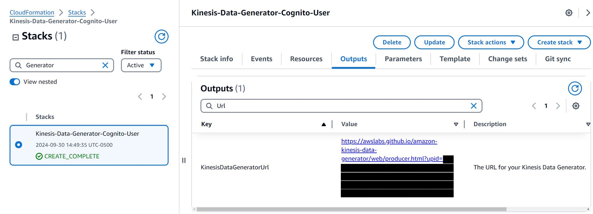

The Kinesis Data Generator makes it easy to send data to Kinesis Streams or Kinesis Firehose. Learn how to use the tool and create templates for your records.
Before you can send data to Kinesis, you must first create an Amazon Cognito user in your AWS account with permissions to access Amazon Kinesis. To simplify this process, an Amazon Lambda function and an Amazon CloudFormation template are provided to create the user and assign just enough permissions to use the Kinesis Data Generator.
Create the CloudFormation stack by clicking the button below. It will take you to the AWS CloudFormation console and start the stack creation wizard. You only need to provide a Username and Password for the user that you will use to log in to the Kinesis Data Generator. Accept the defaults for any other options presented by CloudFormation.
Create a Cognito User with CloudFormation
The CloudFormation template can be downloaded from here. Because Amazon Cognito is not supported by CloudFormation, much of the setup is done in a Lambda function. The source code for the function can be downloaded from here.
The CloudFormation template will create the following resources in your AWS account:
The Lambda function will create the following resources in your AWS account:
After the CloudFormation stack has been successfully created, you will need to use a special URL to access the Kinesis Data Generator. CloudFormation creates this URL as part of the stack generation, and you can find it in the Outputs section of the CloudFormation stack.
To find the URL, choose the CloudFormation stack, and then choose the Outputs tab as shown below. Simply bookmark this URL in your browser for easy future access to the Kinesis Data Generator.

The Kinesis Data Generator can generate records using random data based on a template you provide. In the Record Template textarea, provide a template that represents a single record. The Kinesis Data Generator will create a unique record based on the template, replacing your templated record with actual data. The record template can be of any type: json, csv, or unstructured. Because of this, there is no validation of the data before it is sent to Kinesis.
The Kinesis Data Generator extends faker.js, an open source random data generator. For full documentation of the items that can be "faked" by faker.js, see the faker.js documentation.
Data elements in a teamplate that need to be replaced for each record use moustache syntax (i.e. enclosed in double curly-braces {{ replace.this }} ). Consider the following data record, representing somebody's first name, last name, age, and IP address:
John,Doe,42,127.0.0.1
The template to generate records of this type:
{{name.firstName}},{{name.lastName}},{{random.number(70)}},{{internet.ip}}
Records can be represented in any data structure, such as JSON:
{
"sensorId": 40,
"currentTemperature": 76,
"status": "OK"
}
In this template, assume that the "status" can be only one of three items (OK, WARN, FAIL). Also assume that we want the temperature range to be a random value between 10 and 150. The template for this would look like:
{
"sensorId": {{random.number(50)}},
"currentTemperature": {{random.number(
{
"min":10,
"max":150
}
)}},
"status": "{{random.arrayElement(
["OK","FAIL","WARN"]
)}}"
}
The Kinesis Data Generator supports several other templating features, in addition to the native templating provided by faker.js.
You can insert the current date and time into each record by including a date.now item in your record template. The Kinesis Data Generator uses the moment.js library for datetime formatting. Details for creating an appropriate format string for your use case can be found in the moment.js documentation. Several examples are shown here:
{{date.now}} // 2014-09-08T08:02:17-05:00
{{date.now("dddd, MMMM Do YYYY, h:mm:ss a")}} // Sunday, February 14th 2010, 3:25:50 pm
{{date.now("ddd, hA")}} // Sun, 3PM
{{date.now("DD/MMM/YYYY:HH:mm:ss Z")}} // 14/Jul/2009:20:12:22 -0700
Sometimes you don't want randomness to be completely random. You might want to to choose elements from an array, but you want the randomness to be weighted such that over time, each element is chosen a certain number of times, relative to other elements in the array. To accomplish this, use random.weightedArrayElement. It takes a JSON object as input, with that JSON object containing two attributes: weights, and data. Each attribute contains a single array. The data array contains the data from which you want the function to choose, and the weights array contains items representing the percentage that each corresponding element in the data array should be chosen.
{{random.weightedArrayElement(
{
"weights": [0.3,0.2,0.5],
"data": ["cat","fish","dog"]
}
)}}